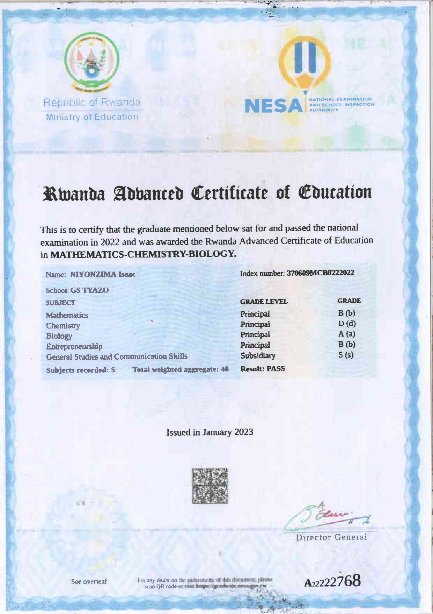

Focused on building practical projects and research around digital business systems and AI-driven development tools. Final project: Vendor Business Management System with Django and PostgreSQL.
High School Education
Advanced Level Certificate
Majored in Mathematics, Biology, and Chemistry — strong analytical foundation for problem-solving in computer science.
Quantitative reasoning and analytical thinking
Scientific research and experimentation
Teamwork and leadership skills via academic projects

Academic Platforms & Research
HarvardX | edX
Courses: Introduction to CS (CS50), Web Dev with Python/JS, AI fundamentals. Hands-on projects simulating real-world computing problems.
"Isaac is an exceptional student with strong analytical skills and a passion for applying AI to real-world business solutions." – Prof. Jean Claude, Computer Science Department
"His dedication to mastering web development and AI is impressive, and he consistently delivers projects with professionalism and creativity." – Mentor, ALX Africa Program